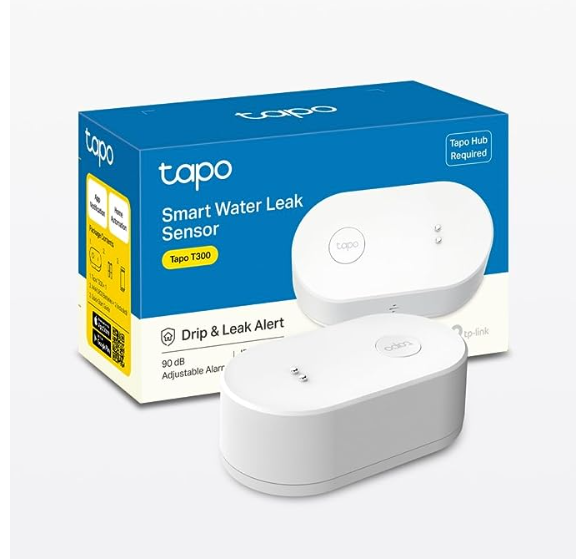
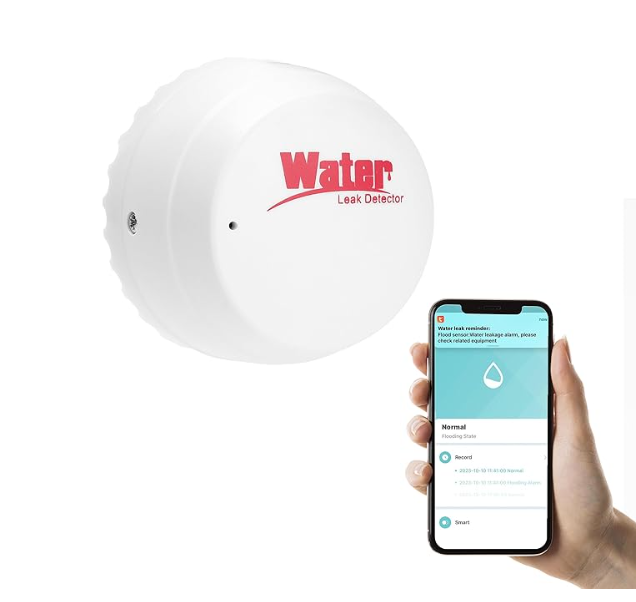
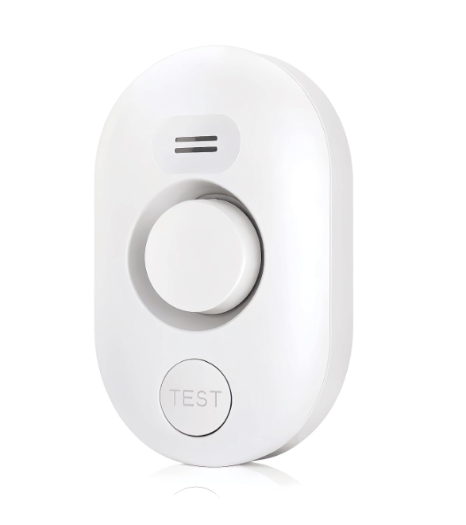
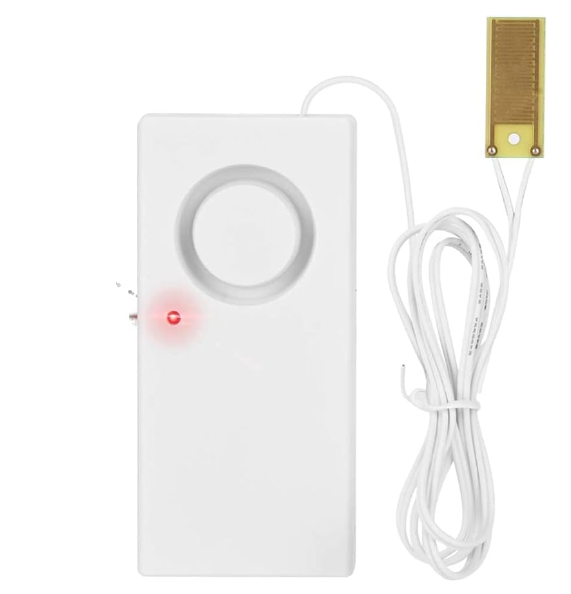
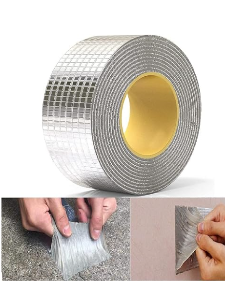
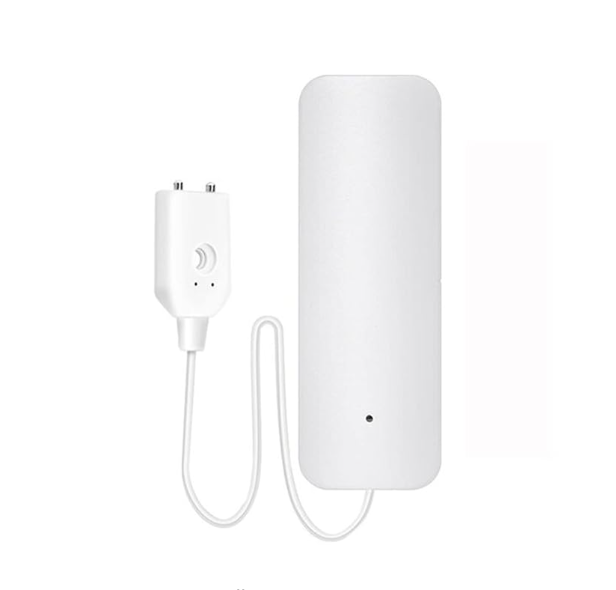

TP-Link Tapo T300 Smart Water Leak Sensor with Dripping Detection, Up to 90 dB Alarm with one-Touch, Instant App Notification, IP67 Waterproof, Tapo Hub Required Sold separetly

MOTTERU Water Detector Alarm with Tuya APP, Water Leak Detector - Water Sensors for Leaks WiFi 2.4G, Smart Home Devices, Water Alarm Leak Detector, Water Sensor Alarm, Water Leak Detectors for Home

Water Leak Detector Sensor Alarm: Home Water Flooding Monitor Smart Sink Overflow Monitoring Adjustable Wet Moisture Alert Pipe Leakage Drip Detection Warning for Basement Floor

STORE77® Water Leak Sensor Detector Flood Alarm Work Alone Battery Operated Overflow Flood Water Level Alarm Detector Solar Full Water Leak Alarm rain Alarm Liquid Level Alarm

Rylan Leakage Repair Waterproof Tape for Pipe Leakage Roof Water Leakage Solution Aluminium Foil Tape Waterproof Adhesive Tape Sealing Butyl Rubber Tape for Leakage

amiciSmart WiFi Water Leakage Detector, SmartLife App Compatible Water Overflow Alarm, Smart Leak Sensor with 2xAAA Battery